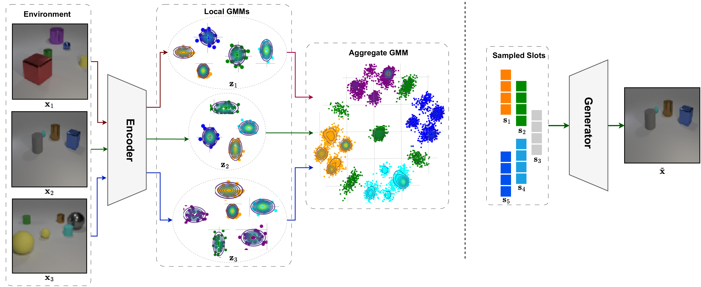
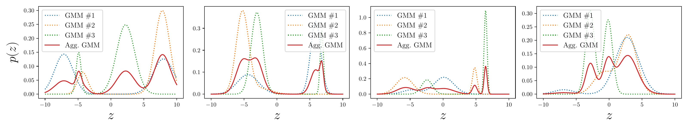
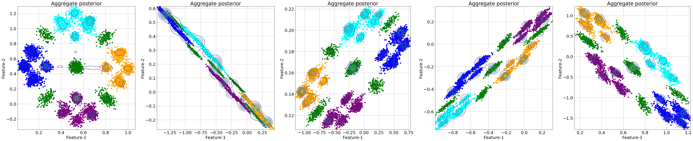
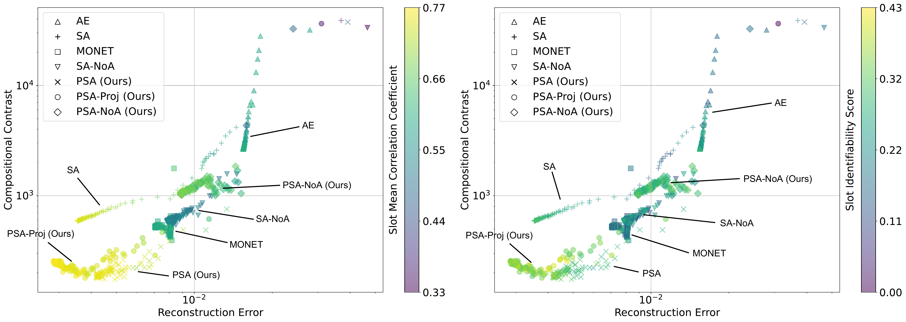

Identifiable Object-Centric Representation Learning via Probabilistic Slot Attention
A probabilistic reformulation of slot attention puts a learned Gaussian-mixture prior over slots — and proves that the resulting object representations are identifiable, without supervision, up to an affine transformation and a permutation of the slots
Slot-attention models bind images into modular object representations, but give no theoretical guarantee that those representations are well-defined. This work recasts slot attention probabilistically: each image is encoded and a local Gaussian Mixture Model is fit to its features via a bespoke expectation–maximisation routine, so every slot becomes a Gaussian posterior. Marginalising over the dataset yields a tractable, non-degenerate aggregate mixture that serves as the optimal slot prior. Under this latent structure and a piecewise-affine, weakly-injective decoder, the authors prove that slots are identifiable without supervision — up to an affine transformation and a slot permutation — generalising identifiability beyond the additive-decoder regime. The claim is verified visually on synthetic 2D data and on imaging benchmarks including CLEVR and ObjectsRoom.
Overview
Learning object-centric representations — decomposing a scene into a set of modular slots, each standing for one object — is widely seen as a stepping stone toward systematic, compositional generalization (Locatello et al. 2020). Slot Attention and its descendants do this remarkably well in practice, yet they come with essentially no theoretical guarantee: nothing tells us that the slots a model learns are well-defined, or that two runs on the same data recover the same underlying object structure.
This paper supplies that missing guarantee. The key move is to make slot attention probabilistic: instead of producing point-valued slots, the method fits a Gaussian mixture over each image’s features and reads the mixture components off as slot distributions. Aggregating these per-image mixtures over the dataset yields a tractable global prior over slots — and the authors prove that, under this latent structure together with a mild condition on the decoder, the slots are identifiable up to an affine transformation and a permutation, with no supervision required.

A prior thread of work establishes identifiability by constraining the mixing function (the decoder) — most prominently via additive decoders, where each pixel is a function of at most one slot (Brady et al. 2023; Lachapelle et al. 2024). That route is principled but costly: enforcing the associated compositional contrast condition requires Jacobian computations and second-order optimization, which the authors note becomes computationally prohibitive even at moderate resolution. This work takes the complementary route — imposing structure on the slot latent space instead — which generalizes to non-additive decoders and is invariant to the number of slots K, rather than scaling with it.
From slot attention to a local mixture model
Standard Slot Attention takes a feature map \mathbf{z} \in \mathbb{R}^{N \times d} encoded from an image and iteratively refines K slots \mathbf{s} \in \mathbb{R}^{K \times d} through a competitive cross-attention update (Locatello et al. 2020). Reading this from a graphical-model perspective, the random initialization of the slots makes the encoder stochastic, but because every update still depends on the input, the result is not a generative model one can sample from.
Probabilistic Slot Attention (PSA) augments this with a per-datapoint Gaussian Mixture Model. For each image \mathbf{x}_i, the goal is to fit a K-component mixture to its N feature vectors,
p(\mathbf{z} \mid \boldsymbol{\pi}_i, \boldsymbol{\mu}_i, \boldsymbol{\sigma}_i) = \prod_{n=1}^{N} \sum_{k=1}^{K} \boldsymbol{\pi}_{ik}\,\mathcal{N}\!\left(\mathbf{z}_n; \boldsymbol{\mu}_{ik}, \boldsymbol{\sigma}_{ik}^2\right),
so that the K mixture components become the slot posterior distributions \mathbf{s}_k \sim \mathcal{N}(\boldsymbol{\mu}_k, \boldsymbol{\sigma}_k^2). The mixture is fit on the fly with a bespoke expectation–maximisation algorithm whose closed-form updates retain the query/key/value projections of attention: each feature (key) is softly assigned to a slot (query) by its normalized density under that slot’s Gaussian, and the slot means, variances, and mixing coefficients are then refreshed from those responsibilities.
Two properties of this construction matter downstream:
- Complexity is unchanged. PSA keeps the \mathcal{O}(TNKd) cost of slot attention; the extra mixing-coefficient and variance updates do not alter the dominant term.
- Slots prune themselves. Because the mixing coefficients \boldsymbol{\pi}(T) are input-dependent, unused slots have \boldsymbol{\pi}(T)_k \to 0 after the attention iterations — an Automatic Relevance Determination mechanism that lets a simple threshold \tau drop inactive slots, addressing the long-standing problem of choosing K per image.
The aggregate posterior is a tractable mixture prior
Rather than constraining slot posteriors toward a fixed prior (as a VAE would, at the cost of further variational approximation), PSA computes the optimal prior directly. Marginalising the per-image posteriors over the dataset,
q(\mathbf{z}) = \frac{1}{M}\sum_{i=1}^{M} q(\mathbf{z}\mid \mathbf{x}_i),
gives the aggregate posterior. The paper proves this is a non-degenerate Gaussian mixture with MK components — a well-defined density whose mixing coefficients sum to one — that is flexible, multimodal, and tractable to sample from. The figure below illustrates the idea on a small example: several local bimodal mixtures (dotted) aggregate into a single multimodal density (red).

The identifiability result
The theory chains three pieces together. First, the aggregate posterior q(\mathbf{z}) is a non-degenerate MK-component GMM (the optimal slot prior). Second, because PSA is permutation-equivariant, the concatenation of the K sampled slots \mathbf{s} = (\mathbf{s}_1,\dots,\mathbf{s}_K) \in \mathbb{R}^{Kd} is itself GMM-distributed, with one mode for each of the K! slot orderings. Third, given a mixing function (decoder) f : \mathcal{S} \to \mathcal{X} that is piecewise affine and weakly injective, the authors extend the GMM identifiability result of Kivva et al. (2022) to the object-centric setting.
The conclusion is identifiability up to a controlled equivalence relation: two parameter settings that explain the data are related by a slot permutation \mathbf{P}, an affine map \mathbf{H}, and an offset \mathbf{c},
\boldsymbol{\theta}_1 \sim_s \boldsymbol{\theta}_2 \iff \exists\,\mathbf{P}, \mathbf{H}, \mathbf{c}:\; f^{-1}_{\boldsymbol{\theta}_1}(\mathbf{x}) = \mathbf{P}\!\left(f^{-1}_{\boldsymbol{\theta}_2}(\mathbf{x})\,\mathbf{H} + \mathbf{c}\right),
which in turn implies that each individual slot distribution is identifiable up to an affine transformation (Khemakhem et al. 2020). Crucially, this holds for piecewise-affine decoders — e.g. ordinary MLPs with LeakyReLU activations — which are strictly less restrictive than additive decoders.
Empirical verification
Since the contribution is primarily theoretical, the experiments are built to verify the identifiability claim rather than to chase leaderboard numbers.
Synthetic objects. The authors construct a 2D dataset from a K{=}5-component GMM (five “object types”), where each of 1000 datapoints mixes 3 of the 5 components. Training PSA across runs and visualising the recovered aggregate posterior shows the same latent structure each time — merely rotated, translated, skewed, or flipped — exactly the affine-equivalence the theory predicts. The paper reports a slot-MCC of 0.93 \pm 0.04 and an R^2 of 0.50 \pm 0.08 on this setup.

Identifiability scores on imaging data. To quantify slot identifiability the paper uses the slot identifiability score (SIS) (Brady et al. 2023) and a slot-MCC (SMCC), a mean-correlation coefficient between matched, affinely aligned slots. Sweeping models on SpriteWorld, the authors reproduce the prior finding that SIS improves as compositional contrast and reconstruction error fall — but show that with a non-additive decoder the compositional contrast need not collapse, while SMCC and SIS stay high. The scatter below tracks compositional contrast against reconstruction error, colored by SMCC: PSA and its projected variant occupy the high-identifiability, low-contrast corner.

Object-centric benchmarks. On CLEVR and ObjectsRoom — where ground-truth factors are unobserved, so identifiability is measured across seeds — the PSA family leads the SMCC and slot-averaged R^2 comparison against an autoencoder, MONET, and standard Slot Attention.
| Method | CLEVR · SMCC | CLEVR · R² | ObjectsRoom · SMCC | ObjectsRoom · R² |
|---|---|---|---|---|
| AE | 0.43 | 0.26 | 0.46 | 0.45 |
| MONET | 0.32 | 0.39 | 0.43 | 0.41 |
| SA | 0.56 | 0.55 | 0.66 | 0.54 |
| SA-NoA | 0.23 | 0.24 | 0.48 | 0.47 |
| PSA-NoA (ours) | 0.56 | 0.42 | 0.44 | 0.45 |
| PSA (ours) | 0.58 | 0.48 | 0.66 | 0.64 |
| PSA-Proj (ours) | 0.66 | 0.62 | 0.71 | 0.62 |
Scaling up. Swapping the slot-attention module for PSA inside a SLATE-style transformer decoder improves CLEVR identifiability further (SMCC 0.73 \pm 0.01, R^2 0.55 \pm 0.06). On the real-world Pascal VOC 2012 benchmark, following the DINOSAUR setup, PSA is competitive with standard slot attention: a PSA MLP head (with DINO features, evaluated with slot-attention masks) reaches \text{mBO}_i = 0.405 and \text{mBO}_c = 0.436, and a PSA transformer head reaches \text{mBO}_i = 0.447, \text{mBO}_c = 0.521 — on par with the corresponding DINOSAUR transformer baseline (0.44 / 0.512).
Takeaways
The paper shifts the basis for object-centric identifiability from the decoder to the latent space. By fitting a local Gaussian mixture per image and aggregating it into a global mixture prior, probabilistic slot attention makes slots provably identifiable — up to an affine map and a permutation — without supervision and without the costly additive-decoder machinery, while remaining a near drop-in replacement for slot attention. The authors are candid about the limits: the guarantee rests on a weak-injectivity assumption on the mixing function that may not hold for every architecture; piecewise-affine decoders can misspecify real-world data; the slot-permutation invariance that object-centric models rely on technically makes the decoder non-invertible; and occluded objects are left to future work.
The figures on this page are reproduced from the original paper, released under CC BY-NC-ND 4.0. A copyable BibTeX entry for this page is generated below.
Citation
@inproceedings{kori2024,
author = {Kori, Avinash and Locatello, Francesco and Santhirasekaram,
Ainkaran and Toni, Francesca and Glocker, Ben and De Sousa Ribeiro,
Fabio},
title = {Identifiable {Object-Centric} {Representation} {Learning} via
{Probabilistic} {Slot} {Attention}},
booktitle = {Advances in Neural Information Processing Systems
(NeurIPS)},
date = {2024-06-11},
url = {https://arxiv.org/abs/2406.07141}
}